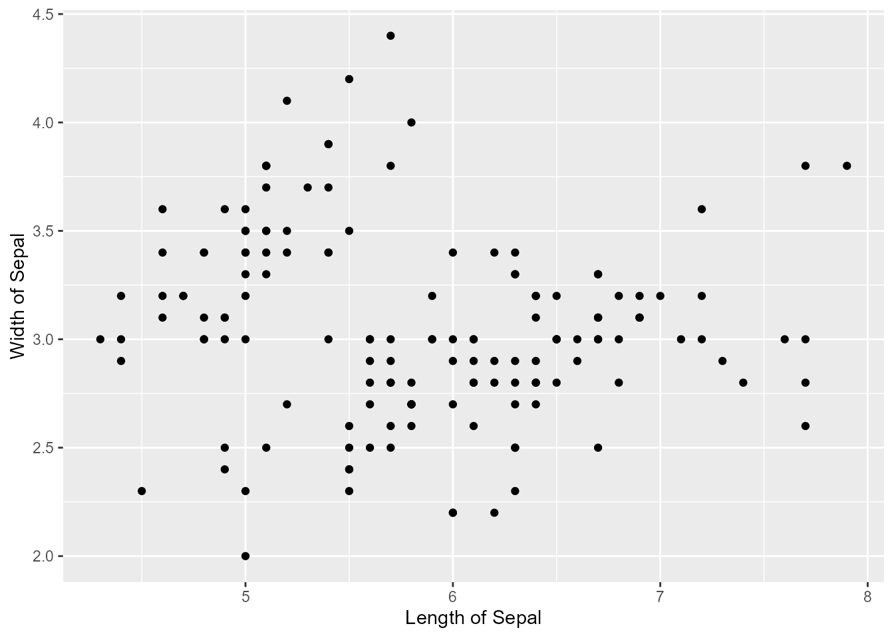
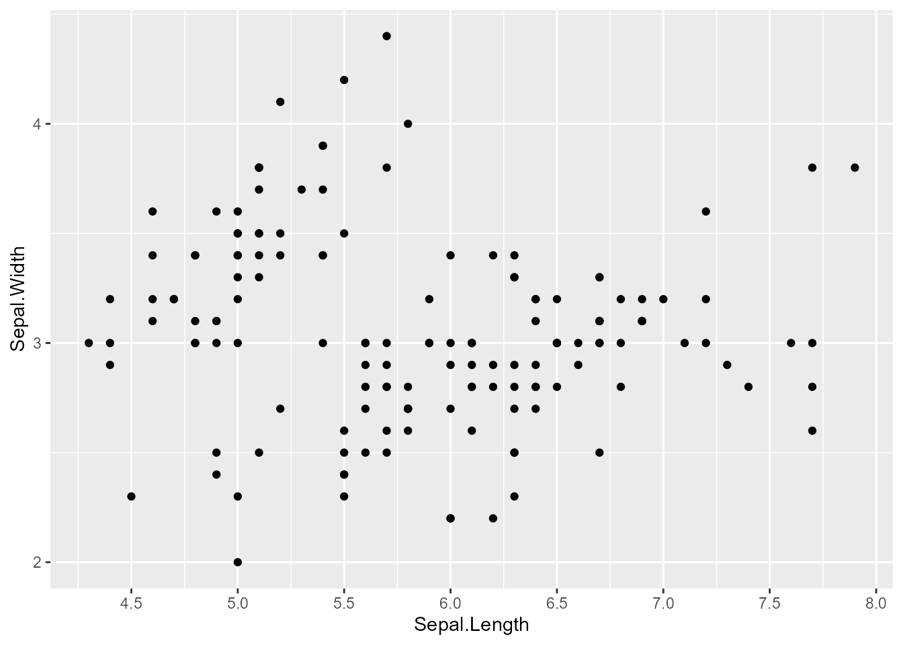
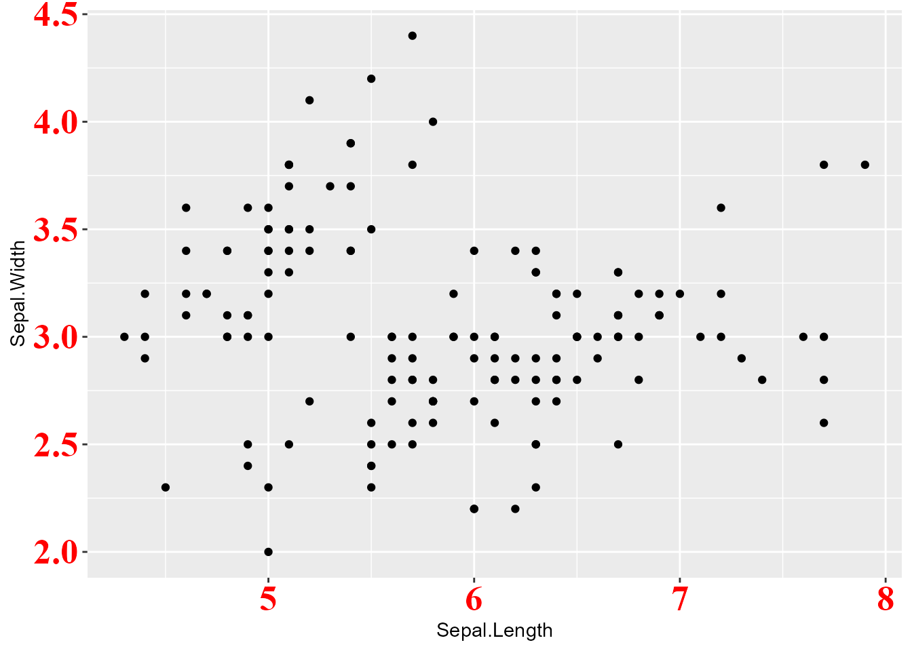
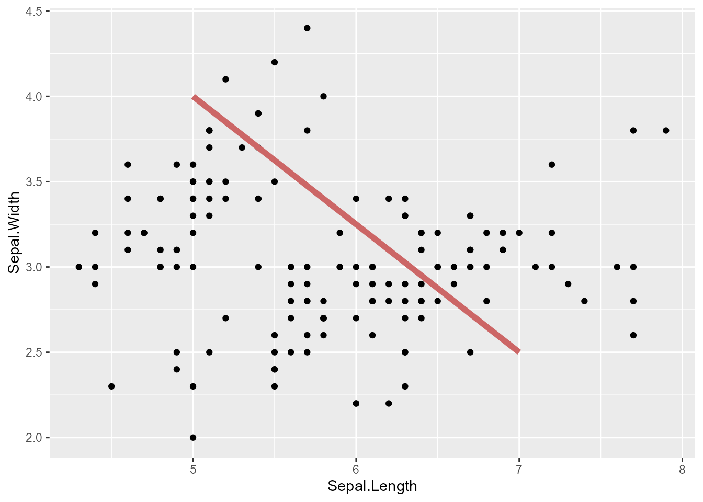
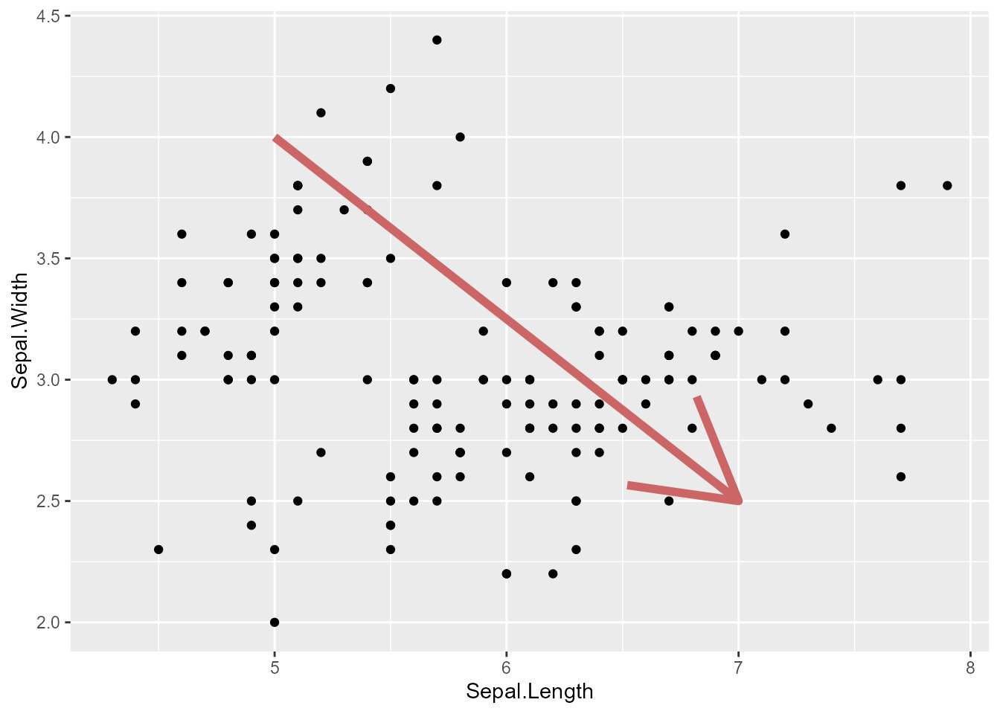
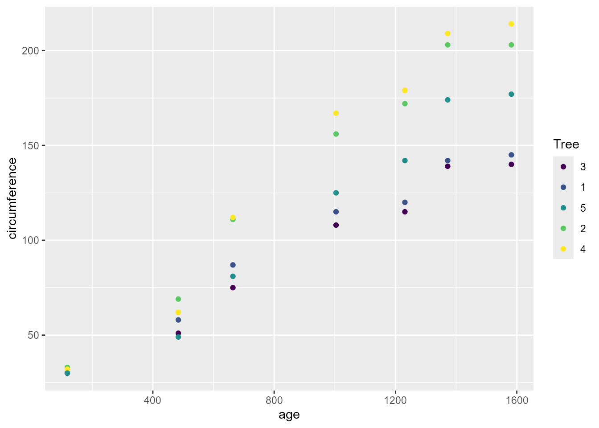
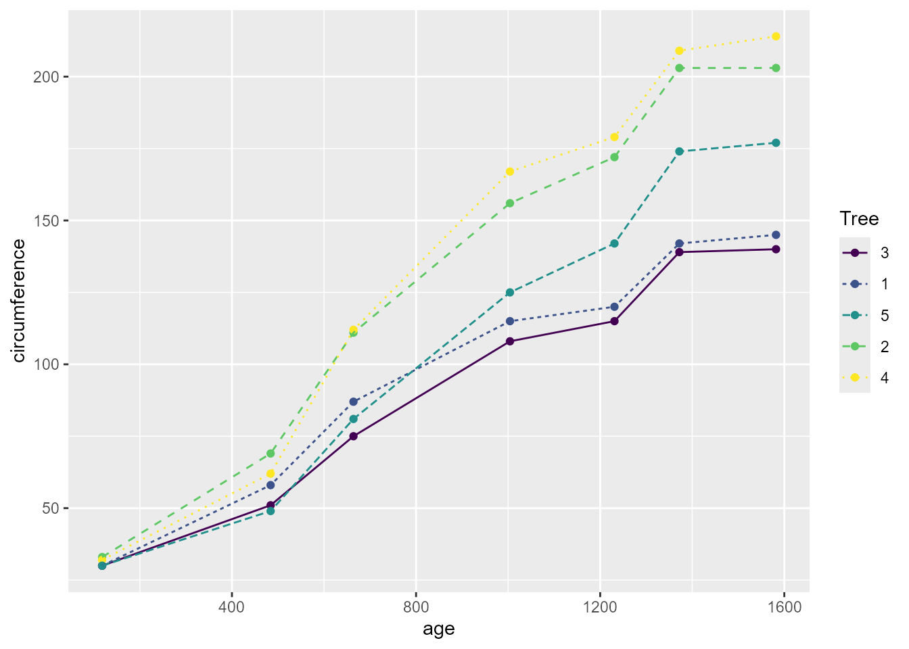
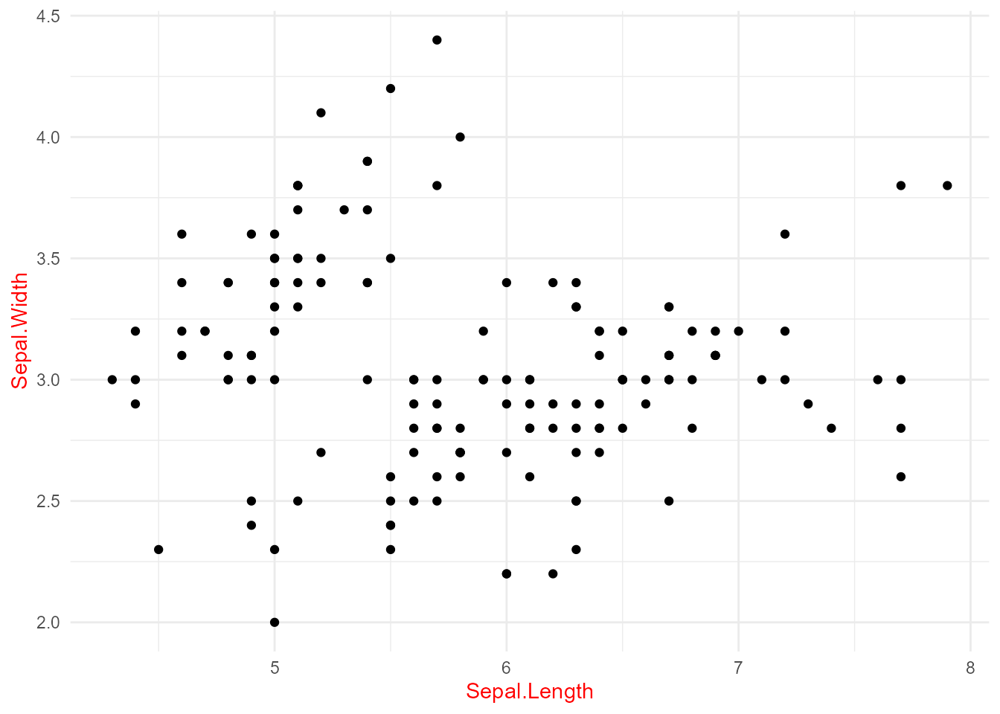

# install.packages("ggplot2")
library(ggplot2)はじめに
皆さん、ggplot、使ってますか？多分お使いですよね。
僕は数か月前ggplotのガイドブックを買いまして、いろいろと勉強しているところでございます。
こんなこともできるのか！という発見が多々あり、Rユーザーの皆様にはぜひ買っていただきたい代物なのですが、いかんせんお値段が張りますので、いくつかピックアップしてご紹介します。
書籍のリンクは以下です。
ggplot2の基本
Note
使ったことがある方はこの辺はスキップしてください。
今回使うデータは、デフォルトで用意されているirisとOrangeです。
ひとまず主要なパッケージであるggplot2を読み込みます。
基本的な使い方としては、ggplot()とaes()、そして図に応じてgeom_line()やgeom_point()を使っていきます。
今回は例として、アイリスのがく片の長さ、幅をそれぞれ軸としてプロットします。
ggplot(iris, aes(x = Sepal.Length, y = Sepal.Width)) +
geom_point()ggplot(data, aes())という形で使用するデータを指定aes()内ではX軸とY軸をそれぞれ指定する。- 例：
aes(x = Sepal.Length, y = Sepal.Width)
- 例：
- ggplotのコマンドは
+で繋ぐ - 散布図を作るには
geom_point()を繋げる- その他、折れ線なら
geom_line()、ヒストグラムならgeom_histogram()など
- その他、折れ線なら
これが土台です。ggplot()だけではプロットは表示されませんので、何かしら繋ぐ形にしてください。
今回はggplotの基本というよりも、そこからの拡張を主に書きたいので、この散布図をベースに進めます。
軸
軸ラベル
まずはX軸、Y軸のラベルを変更します。次のコマンドを追加することで変更できます。
ggplot(iris, aes(x = Sepal.Length, y = Sepal.Width)) +
geom_point() +
labs(x = "Length of Sepal", y = "Width of Sepal")

また、以下のコードは同じ結果を示します。
ggplot(iris, aes(x = Sepal.Length, y = Sepal.Width)) +
geom_point() +
xlab("Length of Sepal") +
ylab("Width of Sepal")すなわち、labs()はそれ一つでX軸もY軸もラベルを変更することができますが、xlab()、ylab()を使えば片方ずつ変更できるということです。
次に、軸ラベルの体裁を変更したい場合、以下のようにします。
ggplot(iris, aes(x = Sepal.Length, y = Sepal.Width)) +
geom_point() +
labs(x = "Length of Sepal", y = "Width of Sepal") +
theme(
axis.title = element_text(family = "times", face = "italic",
color = "red", size = 20)
)theme()内のaxis.titleで変更する- X軸Y軸のどちらかだけにしたければ、
axis.title.xのようにします。
- X軸Y軸のどちらかだけにしたければ、
element_text()内で具体的にフォントの体裁を指定今回はわかりやすく派手にしましたが、これらの要素を変更すれば調整できます。
例えば、
face = "bold"にすれば太字にできます。他にもありますが、おおむね使うのはこのあたりでしょう。
軸の目盛り
ggplot(iris, aes(x = Sepal.Length, y = Sepal.Width)) +
geom_point() +
scale_x_continuous(breaks = seq(4.5, 8, .5)) +
scale_y_continuous(breaks = seq(2, 4, 1))

目盛りがX軸は0.5刻み、Y軸は1刻みになるよう変更しました。このように、X（Y）が連続値である場合、scale_x_continuous()（scale_y_continuous()）で変更できます。seq()は数列を作る関数で、seq(from, to, by)の順に指定します1。
目盛りも同様にフォントのスタイルを変更できます。
ggplot(iris, aes(x = Sepal.Length, y = Sepal.Width)) +
geom_point() +
theme(
axis.text = element_text(family = "times", face = "bold",
color = "red", size = 20)
)

もはや訳が分からない図ですが、このように体裁は変更可能です。要素は大体上と同じで、axis.text.xのようにどちらかだけ変更することも可能です。
注釈
文字
表の中に文字を入れたいとき、どうすればよいか悩んだことが僕には何回もあります。
R上ではできないものと思っていましたが、そんなことはありませんでした。
ggplot(iris, aes(x = Sepal.Length, y = Sepal.Width)) +
geom_point() +
annotate("text", label = "ggplot is\nwonderful!", x = 6.5, y = 4,
family = "times", color = "#CC6666", size = 10)annotate("text", label = "hogehoge")で文字を入れることができるxとyを指定しないと反映されない改行したい場合、
\nを入れるフォント、色、サイズも指定できる
関数一つで意外と簡単にできます。
さらに、棒線や矢印を付けることも可能です。
ggplot(iris, aes(x = Sepal.Length, y = Sepal.Width)) +
geom_point() +
annotate("segment", x = 5, xend = 7, y = 4, yend = 2.5,
linewidth = 2, color = "#CC6666")

ggplot(iris, aes(x = Sepal.Length, y = Sepal.Width)) +
geom_point() +
annotate("segment", x = 5, xend = 7, y = 4, yend = 2.5,
linewidth = 2, color = "#CC6666",
arrow = arrow(length = unit(2, units = "cm")))

"segment"で棒線ができるxとxend、yとyendを指定する必要がある- \((x, y)\)から\((xend, yend)\)までの2点を結ぶようにできます。
linewidthで線の太さを指定可- 他の要素も文字と同様に指定できますが、
sizeがlinewidthに置き換わっています。
- 他の要素も文字と同様に指定できますが、
arrow = arrow(length = unit(x, units = "cm"))で矢じりが付くxで矢じりのサイズ、unitsは単位で、他にmmやinchesなどがあります。
以上のように、文字だけでなく線や矢印を追加することができます。
複数のプロットと凡例
複数のカテゴリのプロット
ここではOrangeデータセットを使って複数のカテゴリのプロットと、凡例について説明します。
複数のカテゴリのプロットとは、以下のデータを見ていただけると早いと思います。
Orangeの一部
| Tree | age | circumference |
|---|---|---|
| 1 | 118 | 30 |
| 1 | 484 | 58 |
| 1 | 664 | 87 |
| 1 | 1004 | 115 |
| 1 | 1231 | 120 |
| 1 | 1372 | 142 |
| 1 | 1582 | 145 |
| 2 | 118 | 33 |
| 2 | 484 | 69 |
| 2 | 664 | 111 |
Treeは木の識別子で、1～5まであります。ageは日齢、circumferenceは幹の周囲です。
ここでやりたいことは、木の種類ごとに、日齢と幹の周囲を軸にとってプロットすることです。これをただプロットしてしまうと、
ggplot(Orange, aes(x = age, y = circumference)) +
geom_point()これでは各点がどの木のものなのか判別できない状態です。これを識別するには次のようにします。
ggplot(Orange, aes(x = age, y = circumference, color = Tree)) +
geom_point()

これでとりあえずはどの点がどの木のものかわかるようになりました。color = Treeで、木の種類ごとに色を使うことを指定しています。
今は散布図なので色を分けるだけで済みますが、折れ線グラフのような場合は、色だけでなく線の種類を変えたいかもしれません。そんな時は次のようにします。
ggplot(Orange, aes(x = age, y = circumference, color = Tree, linetype = Tree)) +
geom_point() +
geom_line()

linetype = Treeを追加することで線の種類も木の種類ごとに変更することができました。
このようにaes()内で要素を追加することで種類ごとに分けることができます。
まだ色遣いなどは不格好ですが、いったんこのまま進めます。
凡例の位置
次にしたいのは、凡例の設定です。凡例は現在右側に表示されていますが、まずはこれを下に表示したいとします。これは、次のコードでできます。
ggplot(Orange, aes(x = age, y = circumference, color = Tree)) +
geom_point() +
theme(legend.position = "bottom")theme(legend.position = "bottom")を設定することで、凡例の位置が下になりました。もちろんbottom以外にもtop, left, right（デフォルト）などを指定することができます。
さらに凡例を消したい場合は次のようにします。
ggplot(Orange, aes(x = age, y = circumference, color = Tree)) +
geom_point() +
theme(legend.position = "none")
theme(legend.position = "none")で凡例を消すことができました。
凡例の調整
例えば、凡例のタイトルは消したい場合が結構あると思います。図 10 の例でいえば、Treeという文字は消したいということです。
そんな場合は、以下のようにします。
ggplot(Orange, aes(x = age, y = circumference, color = Tree)) +
geom_point() +
guides(color = guide_legend(title = NULL))
Treeというタイトルが消えました。
ここではguides(color = guide_legend(title = NULL))としていますが、aes()内で例えばlinetypeを使っている場合は、guides()内もlinetype =にする必要があります。
テーマ
ggplotではテーマを選ぶことができます。デフォルトではこれまでの図のように背景がグレーになっていますが、ほとんどの場合で背景は白にしたいですよね。
背景だけでなく、罫線等もテーマで変更することができます。
プリセットのテーマ
いくつかのテーマが準備されています。代表的なものをいくつかご紹介します。
ggplot(iris, aes(x = Sepal.Length, y = Sepal.Width)) +
geom_point() +
theme_minimal()theme_minimal()
ggplot(iris, aes(x = Sepal.Length, y = Sepal.Width)) +
geom_point() +
theme_bw()
theme_bw()
theme_minimal()と比べて外枠が付いています。
ggplot(iris, aes(x = Sepal.Length, y = Sepal.Width)) +
geom_point() +
theme_classic()theme_classic()
ggplot(iris, aes(x = Sepal.Length, y = Sepal.Width)) +
geom_point() +
theme_linedraw()theme_linedraw()
ggplot(iris, aes(x = Sepal.Length, y = Sepal.Width)) +
geom_point() +
theme_light()theme_light()
ggplot(iris, aes(x = Sepal.Length, y = Sepal.Width)) +
geom_point() +
theme_void()theme_void()
さすがにやりすぎでは…と思うかもしれませんが、GISで地図を可視化するようなときに重宝します。
theme()関数
ここまでご紹介したものの中でtheme()を使ったものがいくつかありました。
ここでtheme()はtheme_xxx()の後に使うということに注意してください。
これは、theme_xxx()がtheme()を上書きしてしまうためです。
ggplot(iris, aes(x = Sepal.Length, y = Sepal.Width)) +
geom_point() +
theme(axis.title = element_text(color = "red")) +
theme_minimal()
theme(axis.title = element_text(color = "red"))で軸ラベルを赤色に設定していますが、出力されたものは黒いラベルになっています。
順番を逆にすれば、
ggplot(iris, aes(x = Sepal.Length, y = Sepal.Width)) +
geom_point() +
theme_minimal() +
theme(axis.title = element_text(color = "red"))

このようにしっかり反映されます。
発展1：ggrepel
ここからは、ggrepelというパッケージを用いて折れ線グラフを発展させた例をご紹介します。
# インストール
# pak::pak("ggrepel")
library(ggrepel)まず、以下のようなデータがあるとします。firm_idは30まであります。
| firm_id | state_id | year | treated_1998 | is_treated | y |
|---|---|---|---|---|---|
| 1 | 50 | 1980 | 0 | 0 | 0.6546029 |
| 1 | 50 | 1981 | 0 | 0 | 1.9160271 |
| 1 | 50 | 1982 | 0 | 0 | 2.1400894 |
| 1 | 50 | 1983 | 0 | 0 | 1.8364579 |
| 1 | 50 | 1984 | 0 | 0 | 1.7661105 |
| 1 | 50 | 1985 | 0 | 0 | 1.2856041 |
これを使って横軸にYear、縦軸にyをとってグラフにします。
詳細を書くと長くなるので、適宜メモを入れました。ご参考まで。
df <- df |>
mutate(
# ハイライトする群とそれ以外に分ける
group = if_else(treated_1998 == 1, as.factor(firm_id), "other"),
# 最後の年にだけラベルを付ける
group_lab = if_else(treated_1998 == 1 & year == 2015,
paste0("Firm ", firm_id), NA_character_)
)
ggplot(
# まずハイライトする群だけプロット
df |> filter(treated_1998 == 1),
aes(x = year, y = y, group = firm_id)
) +
theme_minimal() +
theme(
# 罫線を削除
panel.grid = element_blank(),
# 凡例を削除
legend.position = "none",
# 軸のタイトルと文字のフォントとサイズを調整
axis.title = element_text(family = "Times", size = 18),
axis.text = element_text(family = "Times", size = 14)
) +
geom_vline(
# 垂直線を描写
xintercept = seq(1980, 2015, by = 5),
color = "gray91",
linewidth = .6
) +
geom_segment(
# 水平線を描写
# 描写のためにデータを準備
data = tibble(y = seq(-2.5, 5.0, by = 2.5), x1 = 1980, x2 = 2015),
aes(x = x1, xend = x2, y = y, yend = y),
inherit.aes = FALSE,
color = "gray91",
linewidth = .6
) +
geom_segment(
# 薄い水平線を描写
data = tibble(y = seq(-2.0, 4.5, by = .5), x1 = 1980, x2 = 2015),
aes(x = x1, xend = x2, y = y, yend = y),
inherit.aes = FALSE,
color = "gray97",
linewidth = .3
) +
geom_segment(
# 縦軸が0のところに水平線を描写
data = tibble(y = 0, x1 = 1980, x2 = 2015),
aes(x = x1, xend = x2, y = y),
inherit.aes = FALSE,
linetype = "dashed",
color = "gray40"
) +
geom_vline(
# 処置年に垂直線を描写
xintercept = 1998,
linetype = "dashed",
color = "gray40"
) +
geom_line(
# ハイライトしない群をプロット
data = df |> filter(group == "other"),
color = "gray75",
alpha = .5
) +
geom_line(
# ハイライトする群をプロット
aes(color = group)
) +
geom_text_repel(
# ハイライトした線にラベルを追加
aes(color = group, label = group_lab),
family = "Times",
hjust = 0,
# 2017年の位置にラベルを書く
xlim = c(2017, NA),
size = 4,
segment.linetype = "dotted"
) +
xlab("Year") +
ylab("Value") +
scale_x_continuous(
expand = c(0, 0),
# ラベルが見えるように図の端の2015年より広くとる
limits = c(1980, 2021),
breaks = seq(1980, 2015, by = 5)
) +
scale_y_continuous(
expand = c(0, 0),
limits = c(-2.5, 5.0),
breaks = c(-2.5, 0, 2.5, 5.0)
)おわりに
ひとまず僕がよく使うggplotの設定をまとめてみました。ggplotを駆使して、スタイリッシュなプロットを作成していきましょう！
適宜追記する予定ですので、ご参考になれば幸いです。
注
離散値の場合は
scale_x_discrete()などで変更できますが、今回その説明は省きます。↩︎